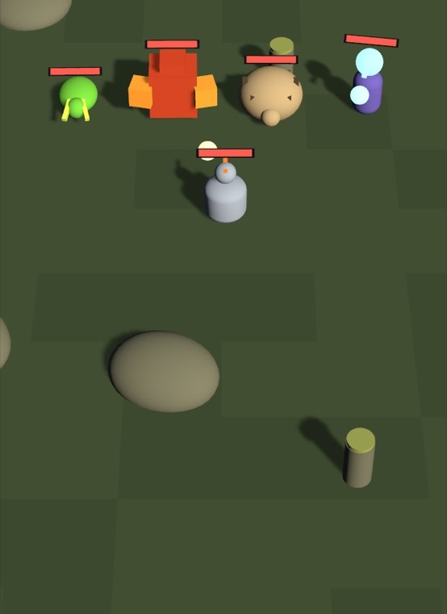
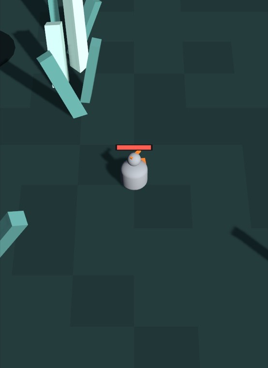

in progress · phases 0-4 done
GRAFT
Top-down 3D extraction game for iPhone. Fight through five biomes, graft enemy parts onto your body, and carry your loot home before it eats you. The game rules sit in their own engine-free C# layer, so most of it is tested without even starting Unity.
unity 6 · urp · c# · navmesh · 170+ tests · ios